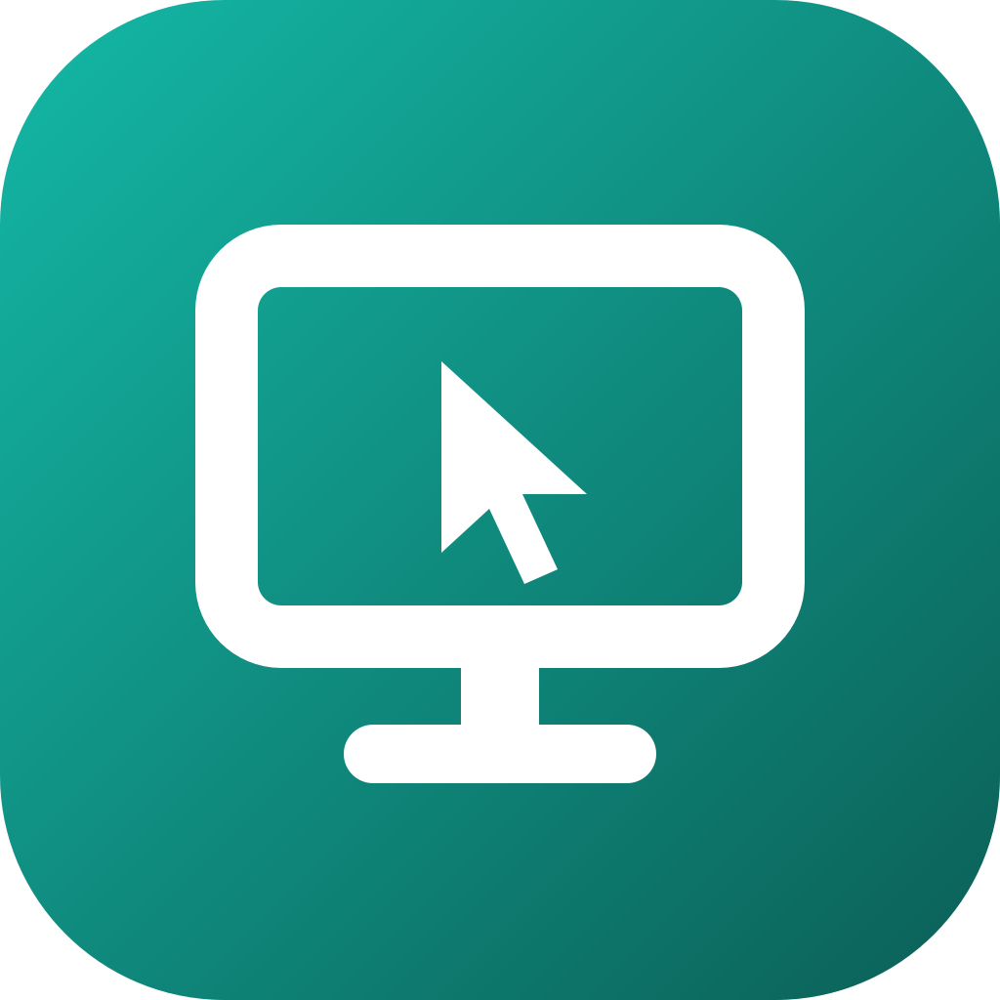
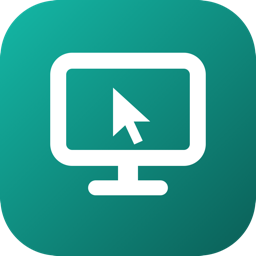

AccosteAccoste relie vos appareils en quelques secondes : un identifiant, un mot de passe, et vous voyez l'écran distant. Aucune coupure au bout de deux heures, aucun code qui change sans arrêt.
Télécharger AccosteWindows, macOS et Android. Gratuit pendant le lancement.

Une session reste ouverte tant que vous en avez besoin, de jour comme de nuit.
Choisissez votre mot de passe une fois pour toutes et reconnectez-vous en un instant, même sans personne devant l'écran.
L'image, le clavier et les fichiers circulent chiffrés entre vos deux appareils. Notre serveur ne voit jamais votre écran.
Accoste affiche son identifiant à 9 chiffres.
Réglages → Sécurité → « Utiliser un mot de passe permanent ».
Depuis un autre appareil, saisissez l'identifiant et le mot de passe : l'écran apparaît.
Windows 10 et 11. Fonctionne sans installation ; un bouton permet de l'installer.
Pour contrôler un ordinateur depuis votre téléphone, ou partager l'écran du téléphone.
Toutes les fonctions, pour un usage personnel ou professionnel, pendant la phase de lancement.
L'application n'a pas encore de certificat de signature. Cliquez sur « Informations complémentaires », puis « Exécuter quand même ».
Installez Accoste (ne le lancez pas seulement en mode portable), fixez un mot de passe permanent et laissez l'ordinateur allumé et branché. Sur un portable Mac, gardez l'écran ouvert.
Notre serveur met les appareils en relation. Quand une connexion directe est impossible, il relaie le flux, qui reste chiffré de bout en bout : nous ne pouvons pas le lire. Détails dans la politique de confidentialité.